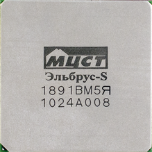
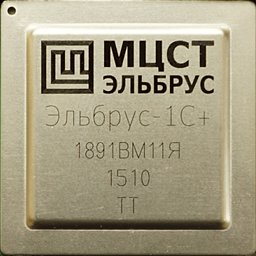
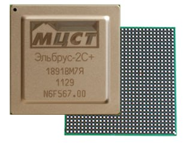
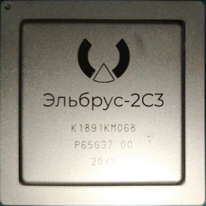
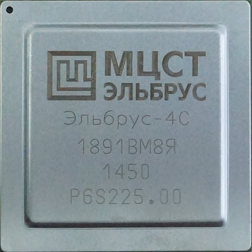
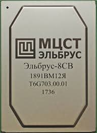
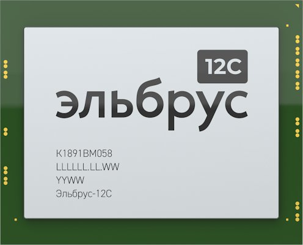
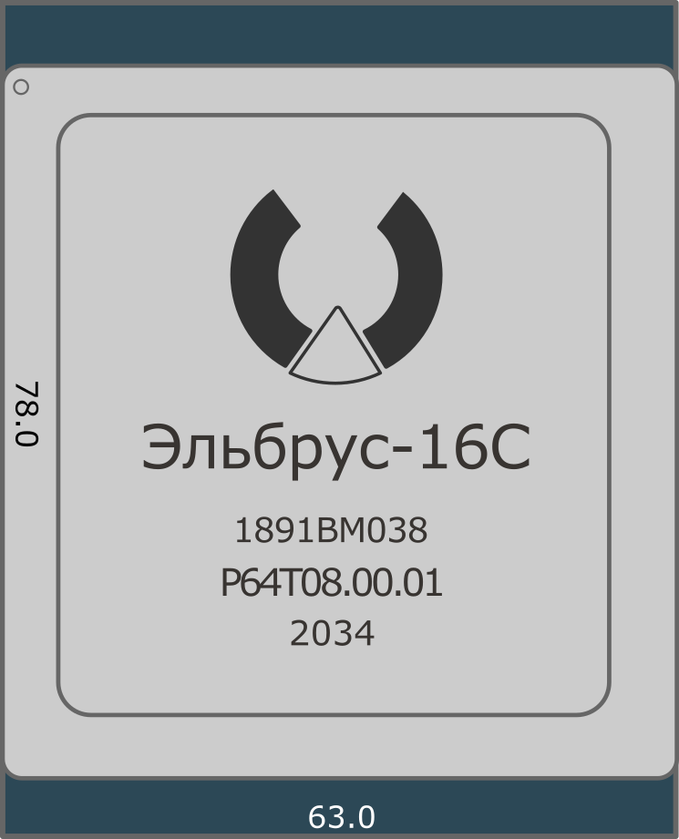

История развития ЦП Эльбрус
-
Российская частная компания, специализирующаяся на разработке: универсальных микропроцессоров; микроконтроллеров; управляющих вычислительных комплексов; оптимизирующих и двоичных компиляторов и операционных систем. Имеет опыт разработки супер-ЭВМ «Эльбрус».
Кто такие МЦСТ?
-
Краткая история Эльбрус
“Эльбрус” – это прежде всего название процессорной архитектуры и разработанных на её основе суперкомпьютеров. Изначально они создавались в качестве части систем ПРО по заказу военных. Разработка началась в 1973 в “Институте точной механики и вычислительной техники имени Лебедева” (ИТМиВТ) под руководством академика Всеволода Сергеевича Бурцева – учёного в области систем управления и теории конструирования универсальных ЭВМ.
-
Отсутствие угроз национальной безопасности государства при лишении доступа к иностранным компонентам и технологиям
Отсутствие давления санкциями на экономическое благосостояния
Минимизация утечки данных из страны
Причины создания Эльбрус
Суперкомьютеры и их история
Эльбрус 1
Производительнотсь : 12 млн оп/c
Количество процессоров : до 10
Объём ОП : 64 мб
Первый Многопроцессорный вычислительный комплекс “Эльбрус-1” был сдан в эксплуатацию в 1980 году. Он мог содержать до 10 процессоров и показывал производительность в 12 млн операций в секунду. Объём оперативной памяти составлял 64 Мбайт (или 220 машинных слов).
Уже в 1985 появилась следующая модификация "Эльбрус 2", производительность возросла до 125 млн оп/с при объединении 10 процессоров (2 из них при этом являлись резервными). Также до 144 МБ увеличился объём оперативной памяти. Нашел свое применение в следующих проектах:
- РЛС “Дон-2Н”
- стационарная радиолокационная станция кругового обзора, главный узел ПРО Москвы; (который до сих пор используется там же, так как задачи почти не изменились и его полностью хватает)
- Ядерный центр Арзамас-16 - центр ядерных исследований

Эльбрус 2
Производительнотсь : 125 млн оп/c
Количество процессоров : до 10
Объём ОП : 144 мб
Процессоры Эльбрус и их история
Также ожидался выпуск "Эльбрус 3", однако из-за ряда проблем, так и не был выпущен. После распада СССР, была создана компания МЦСТ, Борисом Арташесовичем Бабаяном, туда были наняты специалисты из ИТМиВТ, которые разрабатывали как раз первые Эльбрусы. В сотрудничестве с SUN были созданы: МЦСТ-R100, МЦСТ-R150, МЦСТ-R500 и МЦСТ-R500S. Такой опыт позволил получить доступ к передовым технологиям процессоростроения, написания компиляторов, создания операционных систем и т. д. Данный период позволил компании остаться на рынке.
Начиная с 2005 года, МЦСТ ведет разработку процессоров "Эльбрус", которые являются идеологическими наследниками одноименных МВК, построенных на новой архитектуре Эльбрус. Уже в 2008 начались поставки "Эльбрус-3М", они также поставлялись для военной отрасли и частных лиц, интересующихся безопасностью.
-
Эльбрус
Ядра : 1
Частота : 0.3 ГГц
Производит.(GFLOPS) : 2.4
ОЗУ : Внешний контроллер
Техпроцесс : 130 нм
TDP(ВТ) : 6
Год выпуска : 2007
-

Эльбрус S
Ядра : 1
Частота : 0.5 ГГц
Производит.(GFLOPS) : 4
ОЗУ : 3хDDR3 - 1600
Техпроцесс : 90 нм
TDP(ВТ) : 13
Год выпуска : 2010
-

Эльбрус 1C+
Ядра : 1
Частота : 1 ГГц
Производит.(GFLOPS) : 12
ОЗУ : 2хDDR3 - 1600
Техпроцесс : 40 нм
TDP(ВТ) : 10
Год выпуска : 2016
-
Эльбрус 1CK
Ядра : 1
Частота : 1 ГГц
Производит.(GFLOPS) : 12
ОЗУ : хDDR3 - 1600
Техпроцесс : 40 нм
TDP(ВТ) : 20
Год выпуска : 2018
-

Эльбрус 2С+
Ядра : 2
Частота : 0.5 ГГц
Производит.(GFLOPS) : 8
ОЗУ : 3хDDR3 - 1600
Техпроцесс : 90 нм
TDP(ВТ) : 25
Год выпуска : 2012
-

Эльбрус 2С3
Ядра : 2
Частота : 2 ГГц
Производит.(GFLOPS) : 96
ОЗУ : 2хDDR4 - 1600
Техпроцесс : 16 нм
TDP(ВТ) : 10
Год выпуска : 2021
-

Эльбрус 4C
Ядра : 4
Частота : 1.3 ГГц
Производит.(GFLOPS) : 25
ОЗУ : 3хDDR3 - 1600
Техпроцесс : 65 нм
TDP(ВТ) : 45
Год выпуска : 2013
-

Эльбрус 8C
Ядра : 8
Частота : 1.3 ГГц
Производит.(GFLOPS) : 125
ОЗУ : 4хDDR3 - 1600
Техпроцесс : 28 нм
TDP(ВТ) : 80
Год выпуска : 2016
-
Эльбрус 8C1
Ядра : 8
Частота : 1.3 ГГц
Производит.(GFLOPS) : 125
ОЗУ : 4хDDR3 - 1600
Техпроцесс : 28 нм
TDP(ВТ) : 80
Год выпуска : 2018
-

Эльбрус 8CB
Ядра : 8
Частота : 1.5 ГГц
Производит.(GFLOPS) : 288
ОЗУ : 4хDDR4 - 2400
Техпроцесс : 28 нм
TDP(ВТ) : 90
Год выпуска : 2018
-

Эльбрус 12C
Ядра : 12
Частота : 2 ГГц
Производит.(GFLOPS) : 576
ОЗУ : 2хDDR4 - 2666
Техпроцесс : 16 нм
TDP(ВТ) : 100
Год выпуска : 2021
-

Эльбрус 16C
Ядра : 16
Частота : 2 ГГц
Производит.(GFLOPS) : 768
ОЗУ : 8хDDR4 - 2666
Техпроцесс : 16 нм
TDP(ВТ) : 120
Год выпуска : 2021